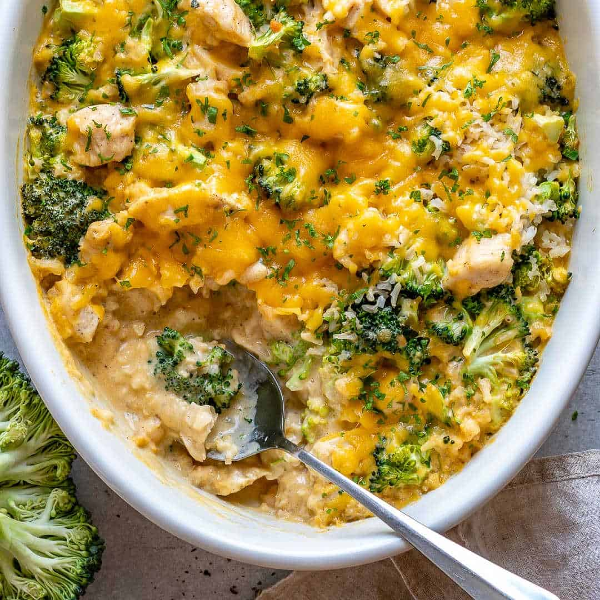

Chicken Broccoli & Cheese Casserole

A tasty and healthy chicken dish, best served with steamed white rice
Ingredients
- 1 Tablespoon Butter
- 2 Skinless & Boneless Chicken Breasts, Cubed
- 3 Cups Finely Chopped Broccoli
- 2 Cans Condensed Cream of Chicken Soup
- 1 Cup Shredded Cheddar Cheese
- 1 Cup Shredded Parmesean Cheese
- 1 Cup Shredded Mozzarella Cheese
- 1/2 Cup Sour Cream
- Ground Black Peppercorn, to Taste
Directions
- Preheat the oven to 350 degrees F (175 degrees C). Butter the bottom and sides of a 9x13-inch dish.
- Bring a pot of water to a boil. Add chicken and continue to boil until no longer pink, 5 to 10 minutes.
- Meanwhile, combine broccoli, cream of chicken soup, Cheddar cheese, 1/2 cup Parmesan cheese, mozzarella cheese, sour cream,
and pepper in a large bowl. Mix well.
- Drain chicken and add to broccoli mixture. Mix well. Pour into the prepared baking dish and spread evenly.
- Bake in the preheated oven for 20 minutes. Add remaining Parmesan cheese on top and continue to bake until cheese is melted, 3 to 5 minutes.